Before you start Chapter 11¶
Before you start · Chapter 11 — Skirts, panels, Clicky-Clack door, filtration
Closes the machine: the skirt ring and its front touchscreen module, the electronics-bay fans, the bottom panel, the Z belt covers, the Nevermore Micro V5 Duo, the spool holder — then, after Ch 13 has proved the machine moves and heats, the back, side and top panels and the Clicky-Clack door.
What you're building in this chapter. Five sub-assemblies turn an open frame into an enclosure. The skirt ring is the band of twelve printed segments around the base that hides and closes the electronics bay; built into it are the orange belt guards over the Z drive belts at the four corners, the two 60 × 20 mm bay fans — both in the right-hand fan support, beside the PSU — the keystone panel carrying the network socket, the already-wired AC inlet segment from Ch 09, and the BTT TFT4.3 touchscreen module that fills the centre-front position. The bottom panel is a door: VHB-bonded to two rear hinges and four clips, it unclips and swings down so the bay stays reachable through Ch 13. Four Z belt covers clip over the belts at the frame corners. The Nevermore Micro V5 Duo is a recirculating carbon filter built from a printed plenum, two 5015 blowers and a magnetic cartridge, mounted inside the chamber on the bed extrusions. Then the panels — back and top on 1 mm foam and 4 mm clips, both sides on 3 mm foam and 6 mm clips, the thicker foam holding the gantry clear — and the Clicky-Clack door, a framed acrylic panel on lift-off hinges with a magnetic handle and latch. Everything from the back panel onward waits until Ch 13 has run the machine with every face open.
Time: 4.0–6.0 h hands-on, first build (survey §5.1, P11). Split roughly 3.0–4.0 h for Part A (before Ch 13) and 1.0–2.0 h for Part B (after Ch 13).
Sessions: 17 × ~30 min (12 in Part A, 5 in Part B; every minute figure in this chapter is a first-build estimate derived from the Time split and the step count).
Prerequisites
- Ch 10 — Wiring, complete, including LDO Checkpoint #1 (multimeter, unplugged). This is a hard gate: once the skirts and bottom panel go on, the bay is closed and re-opening costs an hour (survey §5.2 W8).
- Ch 10 must also have finished LED routing and the extrusion covers — a skirt over an unrouted LED wire means the skirt comes off again (survey §5.2 W5).
- Ch 12 Part 2 complete — Step 12.11 to Checkpoint 12: the bay powered once, both MCUs flashed,
printer.cfgin. It runs with the bay open, before this part closes it; the touchscreen module (11.5–11.6) was already built from Ch 10 Step 10.50 and its panel proved at 12.11. - Print batch B08 — skirts and front modules (6 plates, 29.2 h).
- Print batch B09 — panels, filtration, spool (5 plates, 21.8 h).
- Print batch B10 — Clicky-Clack door (1 plate, 5.7 h) +
Handle.stlfrom B02. - Print batch B02 — the orange accent parts used here: belt guards, fan grills, fan grill retainers, keystone blank, TFT faceplate, Clicky-Clack handle.
- Print batch B07 —
handlebar_spacer_x4(used at the top panel, step 11.60). - Part B additionally requires Ch 13 — Initial startup, and the Ch 06b gantry-squaring pass that runs inside it. Do not close the machine before those pass.
Tools
- Hex 2 / 2.5 / 3 / 4 mm
- Temperature-controlled soldering iron + M3 brass heat-set tip (skirts, fan grill retainers, Nevermore, Clicky-Clack latch)
- Soldering iron + solder for the Nevermore bridge PCB; multimeter for the short check
- Small hammer (Clicky-Clack dowel pins and split bushings)
- Side cutters / flush cutters (5015 fan enclosures, rubber retainer strip)
- Sharp scissors or a craft knife (foam tape, VHB, gasket mitres)
- 150 mm steel rule and a machinist square (door frame corners)
- Flat reference surface (the stone counter) to check every skirt segment for rock
Consumables: 1 mm foam tape, 3 mm foam tape, 3M VHB tape, super glue (magnets), IPA and a lint-free cloth, blue tape (holding the door while you hang it), thread locker (optional, hammerhead quick-release trick).
Printed parts (chapter totals; batch ids from docs/voron-print-plan.md)
Parts arrive in the bins named below (see the bin map in print/README.md#bins); check the bin label's list before you start.
| Looks like | STL | Bin | Qty | Colour | Batch |
|---|---|---|---|---|---|
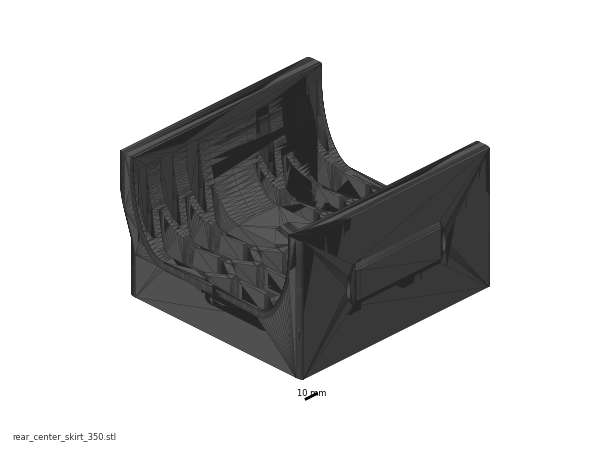 |
rear_center_skirt_350.stl |
11-skirts | 1 | Black | B08 |
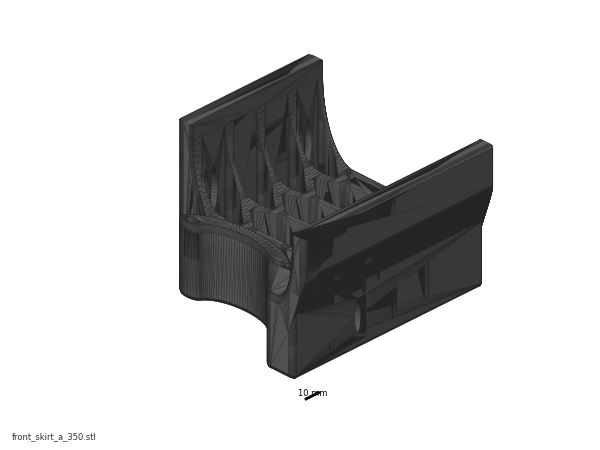 |
front_skirt_a_350.stl |
11-skirts | 1 | Black | B08 |
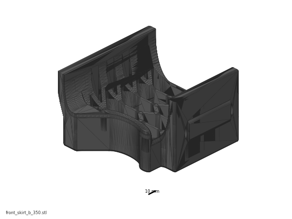 |
front_skirt_b_350.stl |
11-skirts | 1 | Black | B08 |
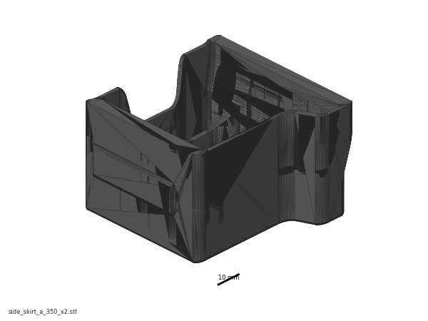 |
side_skirt_a_350_x2.stl |
11-skirts | 2 | Black | B08 |
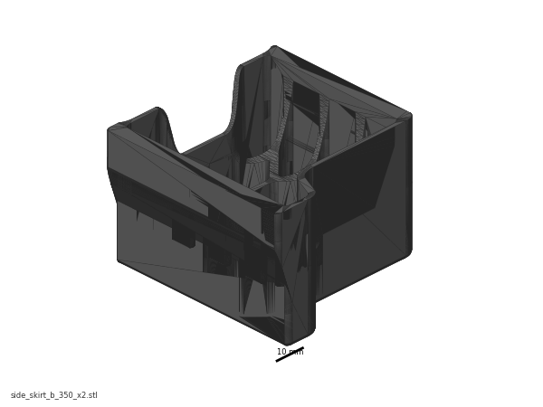 |
side_skirt_b_350_x2.stl |
11-skirts | 2 | Black | B08 |
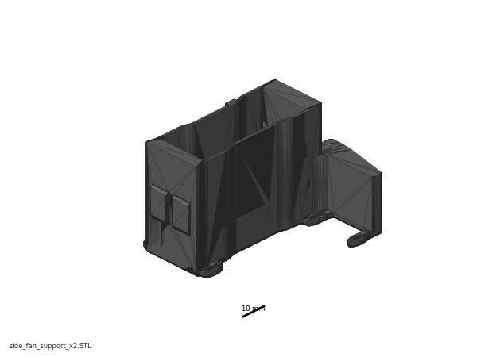 |
side_fan_support_x2.STL |
11-skirts | 2 | Black | B08 |
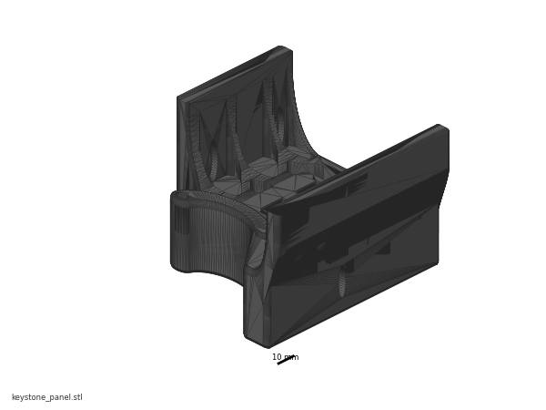 |
keystone_panel.stl |
11-skirts | 1 | Black | B08 |
 |
power_inlet_IECGS_1mm.stl |
09-bay | 1 | Black | B07-P1 (fitted in Ch 09 Steps 09.10–09.12; listed here because it is a ring segment) |
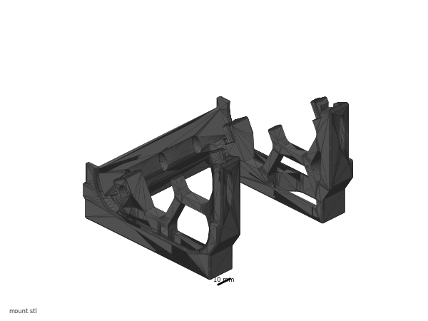 |
mount.stl (BTT Pi TFT4.3 Mount) |
11-skirts | 1 | Black | B08 |
 |
[a]_faceplate.stl (BTT Pi TFT4.3 Mount) |
11-skirts | 1 | Orange | B02 |
 |
[a]_belt_guard_a_x2.stl |
11-fans | 2 | Orange | B02 |
 |
[a]_belt_guard_b_x2.stl |
11-fans | 2 | Orange | B02 |
 |
[a]_fan_grill_a_x2.stl |
11-fans | 2 | Orange | B02 |
 |
[a]_fan_grill_b_x2.stl |
11-fans | 2 | Orange | B02 |
 |
[a]_fan_grill_retainer_x2.stl |
11-fans | 2 | Orange | B02 |
[a]_keystone_blank_insert.stl |
11-skirts | 2 (1 used, 1 spare) | Orange | B02 | |
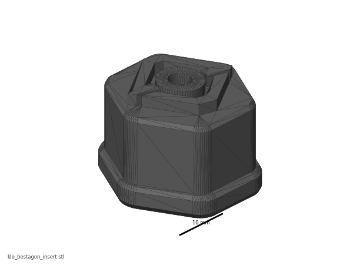 |
ldo_bestagon_insert.stl |
11-skirts | 1 (optional trim) | Orange | B02 |
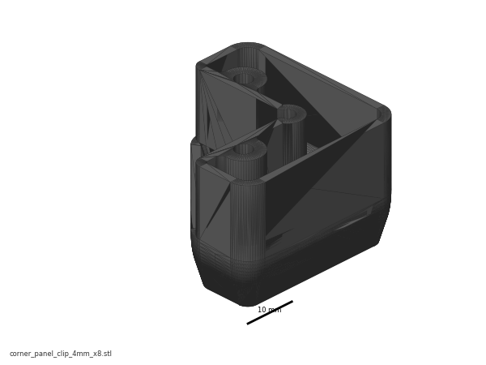 |
corner_panel_clip_4mm_x8.stl |
11-clips-4mm | 8 | Black | B09 |
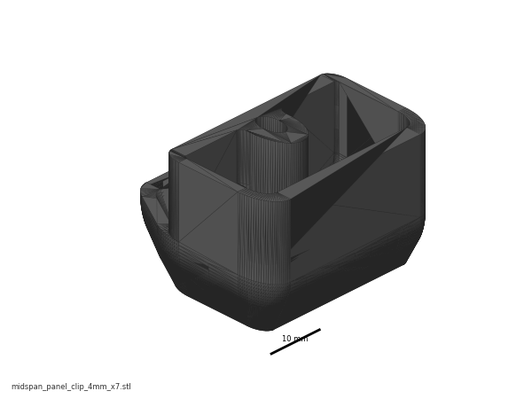 |
midspan_panel_clip_4mm_x7.stl |
11-clips-4mm | 7 | Black | B09 |
corner_panel_clip_6mm_x8.stl |
11-clips-6mm | 8 | Black | B09 | |
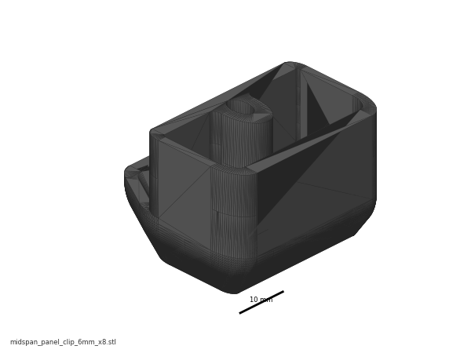 |
midspan_panel_clip_6mm_x8.stl |
11-clips-6mm | 8 | Black | B09 |
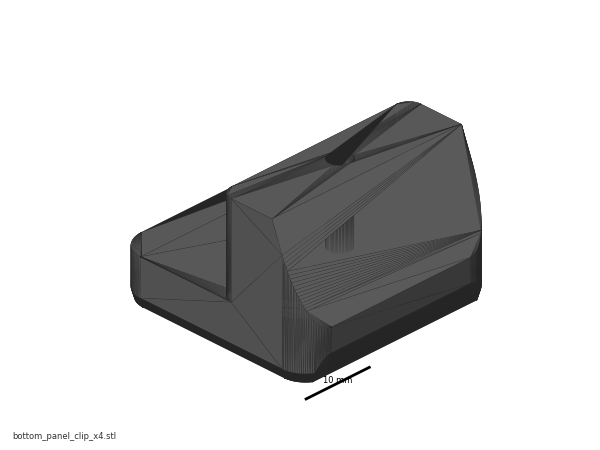 |
bottom_panel_clip_x4.stl |
11-panels | 4 | Black | B09 |
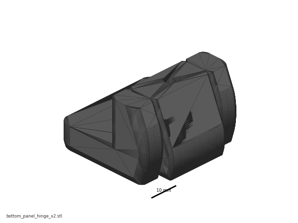 |
bottom_panel_hinge_x2.stl |
11-panels | 2 | Black | B09 |
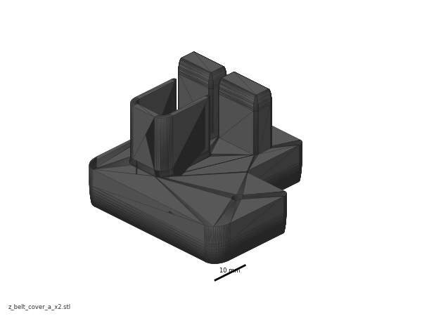 |
z_belt_cover_a_x2.stl |
11-panels | 2 | Black | B09 |
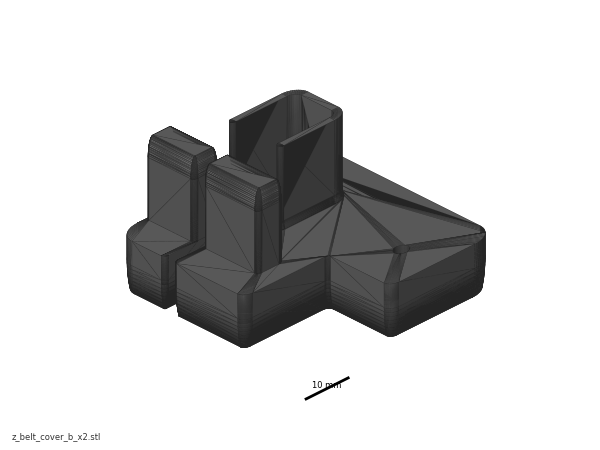 |
z_belt_cover_b_x2.stl |
11-panels | 2 | Black | B09 |
z_belt_cover_a_led.stl (LDO) |
— | 0 | Black | not printed — Ch 10 Step 10.38 routes the LED lead through the extrusion slot, not the Z-motor opening; see 11.22 for the rejected alternative | |
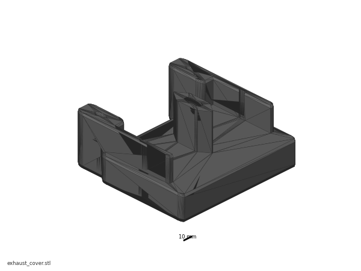 |
exhaust_cover.stl (LDO) |
11-nevermore | 1 | Black | B09 |
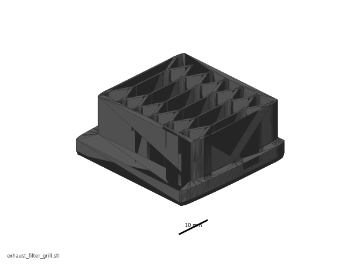 |
exhaust_filter_grill.stl (Voron) |
11-nevermore | 1 | Black | B09 |
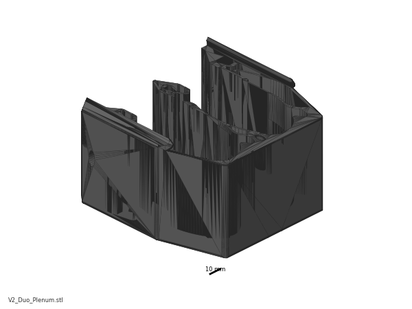 |
V2_Duo_Plenum.stl |
11-nevermore | 1 | Black | B09 |
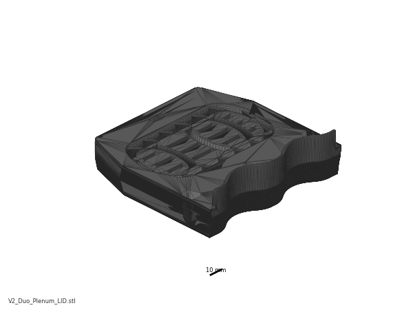 |
V2_Duo_Plenum_LID.stl |
11-nevermore | 1 | Black | B09 |
 |
Regular_Cartridge(contributed_by_Bucknova).3mf |
11-nevermore | 1 | Black | B09 |
 |
Regular_Cartridge_Lid(contributed_by_Bucknova).3mf |
11-nevermore | 1 | Black | B09 |
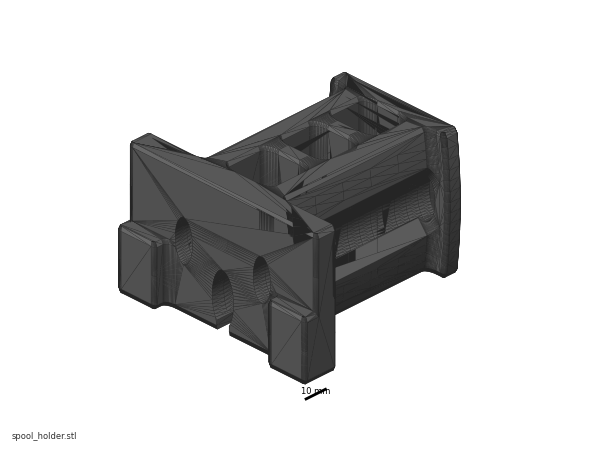 |
spool_holder.stl |
11-spool | 1 | Black | B09 |
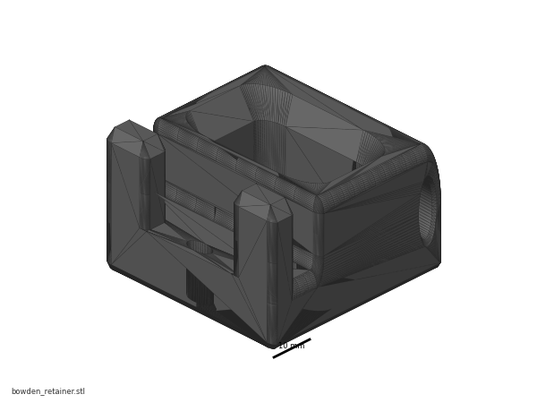 |
bowden_retainer.stl |
11-spool | 1 | Black | B09 |
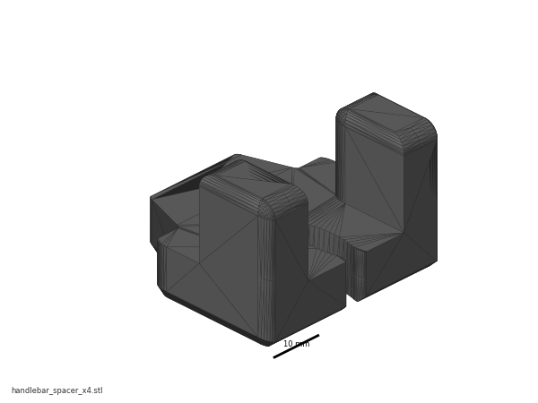 |
handlebar_spacer_x4.stl (LDO) |
11-panels | 4 | Black | B07 |
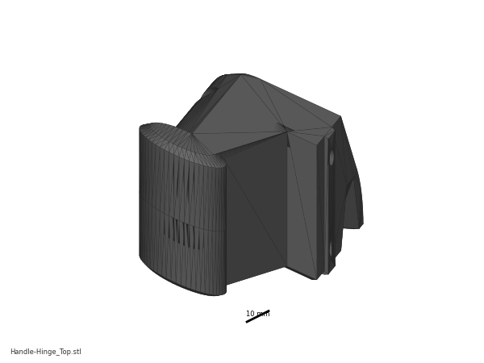 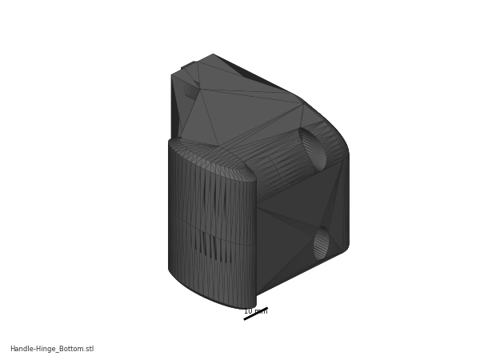 |
Handle-Hinge_Top.stl / Handle-Hinge_Bottom.stl |
11-door | 1 each | Black | B10 |
| 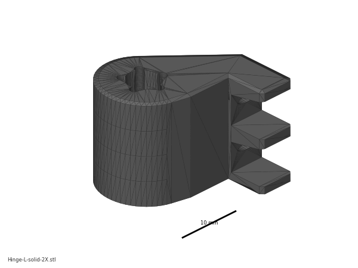 |
Hinge-L-sleeve-2X.stl / Hinge-L-solid-2X.stl |
11-door | 2 each | Black | B10 |
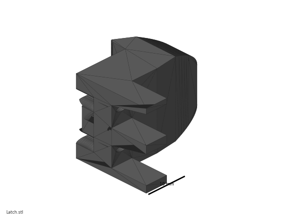 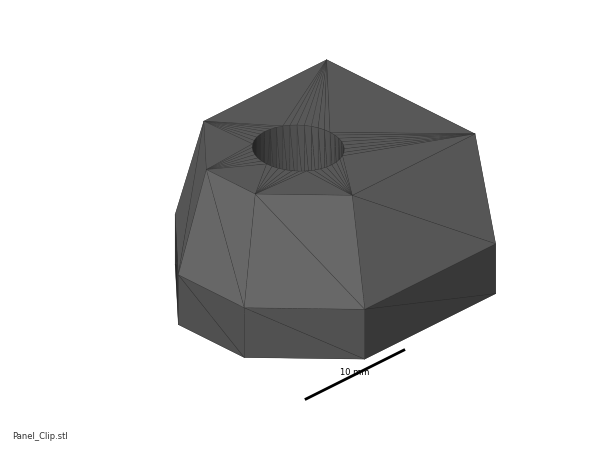 |
Latch.stl / Panel_Clip.stl |
11-door | 1 each | Black | B10 |
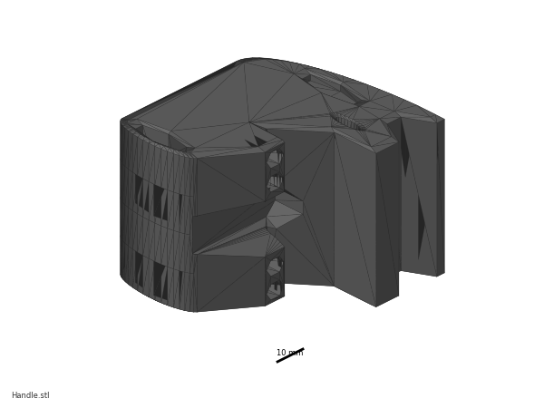 |
Handle.stl (Clicky-Clack) |
11-door | 1 | Orange | B02 |
{kind=link}
{kind=link}
{kind=link}
{kind=link}
{kind=link}
{kind=link}
{kind=link}
{kind=link}
{kind=link}
{kind=link}
{kind=link}
{kind=link}
{kind=link}
{kind=link}
{kind=link}
{kind=link}
{kind=link}
{kind=link}
{kind=link}
{kind=link}
{kind=link}
{kind=link}
{kind=link}
{kind=link}
{kind=link}
{kind=link}
{kind=link}
{kind=link}
{kind=link}
{kind=link}
{kind=link}
Not printed, not installed — the Clicky-Clack replaces the stock front doors and the BTT touchscreen replaces the mini12864, so none of these exist on this machine: Panel_Mounting/Front_Doors/door_hinge_x6, handle_a_x2, handle_b_x2, latch_x2; LDO's whole LDO Door/ set; mini12864_case_front, mini12864_case_rear, [a]_mini12864_case_hinge, [a]_mini12864_case_front_insert, [a]_btt_knob_light_shield; exhaust_filter_housing, [a]_exhaust_filter_mount_x2, [a]_filter_access_cover, [a]_exhaust_fan_grill. Manual pages p.211, p.214–216, p.220–221, p.245–249 and p.250–253/256 are therefore dead pages for this build (print plan §7).
Hardware (chapter totals)
| Fastener / part | Qty | Where |
|---|---|---|
| M3×8 SHCS | 7 | back-panel clips (p.239) |
| M3×8 SHCS | 8 | top-panel clips (p.243) |
| M3×8 SHCS | 8 | electronics-bay fans, 4 per fan (p.228) |
| M3×8 SHCS | 6 | bottom-panel clips and hinges (p.233) |
| M3 T-nut, 2020 (hammerhead or roll-in) | 6 | bottom-panel clips and hinges — p.233 draws the screws straight into the bottom extrusions and names no nut; one per screw (verify on bench) |
| M3×8 SHCS | 5 | BTT TFT4.3 mount + faceplate (mount README) |
| M3×8 SHCS | 1 | bowden retainer (p.257) |
| M3×8 SHCS | belt guards, keystone panel, skirt-to-skirt and skirt-to-frame joints | (verify on bench — p.217, 219, 222–224, 227, 230 name the fastener with no count) |
| M3×12 SHCS | 16 | side-panel clips, 8 per side (p.241) |
| M3×12 SHCS | 2 | exhaust grill to exhaust cover (p.254) |
| M3×6 BHCS | 4 | Z belt covers (p.234) |
| M3 hammerhead T-nut, 2020 | 7 + 8 + 16 + 4 | back / top / side panel clips, Z belt covers |
| M3 hammerhead T-nut, 2020 | 1 | bowden retainer (p.257) |
| M3 roll-in T-nut, 2020 | 3 | BTT TFT4.3 mount |
| M3 roll-in T-nut, 2020 | 12 | skirt ring: p.218 ×4 (front skirts), p.222 ×4 (rear run), p.226 ×2 and p.229 ×2 (side runs) |
| M3 roll-in T-nut, 2020 | 12 | Clicky-Clack: door hinges ×8 (11.62 — 4 on the printer, 4 on the door frame), handle hinges ×4 (11.64) |
| M3 heat-set insert, brass M3×5×4 | 8 | fan grill retainers, 4 each (p.213) |
| M3 heat-set insert, brass M3×5×4 | 2 | BTT TFT4.3 mount |
| M3 heat-set insert, brass M3×5×4 | 6 | Nevermore: 4 fans, 1 plenum, 1 cartridge (LDO guide) |
| M3 heat-set insert, brass M3×5×4 | 1 | Clicky-Clack latch |
| M3 heat-set insert, brass M3×5×4 | skirt segments | (verify on bench — p.212 shows 2–3 per segment) |
| M2.5×6 | 4 | BTT screen into its mount (supplied with the screen) |
| M5×10 BHCS | 2 | skirt ring to frame (p.227, p.230) |
| M5×16 BHCS | 2 | spool holder arm (verify on bench — p.259) |
| M5×14 BHCS | 4 | aluminium handlebars (LDO extra, not in the manual) |
| M5 T-nut, roll-in 2020 | 2 | spool holder (p.259) |
| M5 T-nut, roll-in 2020 | 2 | skirt ring (p.226, p.229) |
| M5 hammerhead T-nut, 2020 | 4 | aluminium handlebars |
| 60×60×20 mm 24 V fan | 2 | electronics bay (LDO 350 Rev D BOM) |
| 3×2 XH splicer PCB | 1 | joins the two bay fans (wiring guide) |
| 5015 fan (Nevermore) | 2 | supplied in the kit's "Nevermore Micro V5 Parts" bag |
| Nevermore bridge PCB | 1 | supplied |
| 6×3 mm neodymium magnet | 8 | Nevermore plenum + cartridge (print plan B09; LDO's guide gives no count) |
| 6×3 mm neodymium magnet | 12 | Clicky-Clack handle, latch, handle hinges (mod BOM) |
| M3×16 BHCS | 4 | Nevermore fans to plenum |
| M3×12 SHCS | 2 | Nevermore plenum to bed extrusions |
| M3×6 BHCS | 2 (+1 optional M3×4 BHCS) | Nevermore plenum lid and cartridge lid |
| M3 T-nut, roll-in 2020 | 2 | Nevermore plenum |
| M5×16 BHCS | 4 | Clicky-Clack door frame blind joints |
| M5×45 dowel pin | 4 | Clicky-Clack hinges and handle |
| M5×7×8 split bushing | 6 | Clicky-Clack hinges and handle hinges |
| M3×20 SHCS | 4 | Clicky-Clack door hinges to frame |
| M3×8 SHCS | 12 | Clicky-Clack (hinges, handle locating screws, latch) |
| M3×8 BHCS | 1 | Clicky-Clack Panel_Clip into the latch |
| Keystone CAT6 insert | 1 | keystone panel |
| Foam tape, 1 mm | back panel + top panel perimeters | supplied, 1 roll |
| Foam tape, 3 mm | both side panels + the Clicky-Clack door opening | supplied, 1 roll |
| 3M VHB tape | 6 pads | bottom-panel clips and hinges (p.232) |
| Aluminium handle | 2 | top panel (LDO) |
| Extrusion slot cover, 6 mm | 2 × 9 m | optional cosmetic finish (LDO) |
Counts marked (verify on bench) are pages where the manual prints the fastener callout with no quantity. Count them off the exploded view as you go; the kit ships 283 M3×8 SHCS, 135 M3 roll-in T-nuts and 75 M3 hammerhead T-nuts in total, so you are not going to run short.
The LDO panel stack for a 350 — read this table before you cut a single strip of foam tape. Thicknesses are from the LDO 350 Rev D BOM; the clip assignment is derived in 11.53/11.57/11.59.
| Panel | Material | Size (mm) | Thickness | Foam tape | Clips | Screw |
|---|---|---|---|---|---|---|
| Deck | Acrylic, black | 469 × 469 | 3 mm (verify — see below) | — | deck_support_*mm_x8, fitted in Ch 02 |
— |
| Bottom | Acrylic, black | 469 × 469 | 4 mm | none — VHB pads instead | bottom_panel_clip_x4 ×4 + bottom_panel_hinge_x2 ×2 |
M3×8 SHCS ×6 |
| Back | Acrylic, black | 483 × 503 | 3 mm | 1 mm | 4 × corner_panel_clip_4mm + 3 × midspan_panel_clip_4mm |
M3×8 SHCS ×7 |
| Side (×2) | PC, clear | 483 × 503 | 3 mm | 3 mm | 4 × corner_panel_clip_6mm + 4 × midspan_panel_clip_6mm, each side |
M3×12 SHCS ×8 each |
| Top | PC, clear | 483 × 483 | 3 mm | 1 mm | 4 × corner_panel_clip_4mm + 4 × midspan_panel_clip_4mm |
M3×8 SHCS ×8 |
| Front door (stock, ×2) | PC, clear | 241 × 503 | 3 mm | — | NOT INSTALLED | — |
| Front door (Clicky-Clack) | Acrylic, clear (Fabreeko) | 480 × 500 | 3 mm | 3 mm on the frame face it seals against | extrusion frame + rubber retainer strip | M5×16 BHCS ×4 (frame) |
Clip totals: 4 mm → 8 corner + 7 midspan = exactly corner_panel_clip_4mm_x8 + midspan_panel_clip_4mm_x7. 6 mm → 8 corner + 8 midspan = exactly corner_panel_clip_6mm_x8 + midspan_panel_clip_6mm_x8. Nothing left over, nothing short.
Caution
Deck panel thickness — unresolved conflict. LDO's Build Notes for p.29–30 say "The LDO deck panel has a 4mm nominal thickness, use deck_support_4mm instead of its 3mm counterpart", but LDO's own 350 Rev D BOM lists the deck panel as 469×469×3 mm (and the bottom panel as 4 mm). One of the two documents is wrong. Caliper the deck panel; do not resolve this from documents (print plan §6). This is a Ch 02 decision — if you fitted deck_support_4mm_x8 under a 3 mm panel, the deck rattles and the skirt ring will not sit flat, and you fix it now, before the ring goes on, not later. src · src
Read first
- Do not start until Checkpoint #1 has passed and Ch 12 Part 2 is done. The skirt ring and bottom panel close the electronics bay, and 12.11–12.37 need it open. Reopening it costs an hour plus the safety risk of having skipped the check (survey §5.2 W8).
- Only Part A happens now. The back, side and top panels and the door go on in Part B, after Ch 13 — the startup wizard's motor, endstop and probe checks and the Ch 06b gantry-squaring pass all need the machine open on every face.
- The Clicky-Clack replaces the entire stock front-door assembly, not the front skirt.
front_skirt_a_350+ the TFT module +front_skirt_b_350still go on. Manual p.245–249 are dead pages. - The BTT 4.3" DSI touchscreen replaces the mini12864 module. Manual p.211, p.214–216 and p.220–221 are dead pages; the mount STL lives in the Trident repo, not the Voron-2 repo. src
- Nevermore replaces the stock exhaust filter. Manual p.250–253 and p.256 are skipped; you print LDO's
exhaust_coverand use it with the stockexhaust_filter_grillto seal the back panel's exhaust cut-out. Decide this now — a back panel sealed the wrong way means the panel comes off and a part gets reprinted (survey §5.2 W11). - Lay every skirt segment on the flat reference and check for rock before you fit anything.
rear_center_skirt_350is 182 mm on its long axis and the worst warp candidate in the whole build. A bowed skirt is the most visible defect on a finished Voron (print plan §5.2, B08 checkpoint).
Sources for this chapter:
- Voron 2.4r2 Assembly Manual, pinned commit
de7e89d— p.210–259 (the whole Skirts/Panels/Doors/Spool section; the dead pages listed below are shown but not followed) - LDO Build Notes (build FAQ) — the dead-page list for p.211, p.214–216, p.220–221, p.245–249, p.250–253 and p.256
- LDO Rev D 350 BOM — panel sizes and thicknesses, bay fans; LDO Rev D printed-parts guide
- LDO wiring guide, Rev D — bay fans, LED strip, touchscreen; BTT 4.3" screen guide
- LDO BTT Pi TFT4.3 mount at commit
5b0496a— the mount lives in the Trident repo, not Voron-2 - LDO Nevermore Micro V5 Duo guide (link-only, no stated licence) and the Nevermore Micro repo
- KB3D Clicky-Clack install guide (link-only) and the mod README at commit
62268ed - STL folders: Voron-2
STLs/and LDOVoron2STLs/ - All step images in this chapter are rendered pages of the official manual, already committed under
assets/manual-pages/— nothing is hot-linked
Video coverage (Steve Builds, pre-release LDO kit — differs from Rev D+): Part 1 @1:45:51 (+10m), Part 5 @4:16:40 (+20m), Part 9 @2:53:49 (+12m), Part 9 @3:15:32 (+3m), Part 9 @3:18:00 (+33m), Part 9 @3:50:40 (+28m), Part 9 @4:18:11 (+26m), Extras! @0:08:09 (+5m), Extras! @0:13:00 (+2m), Extras! @2:04:44 (+42m), Extras! @3:02:15 (+7m), Extras! @3:08:25 (+18m), More Extras! @1:20:31 (+14m)